The harmBounds package calculates stopping probabilities, defines stopping boundaries and generates plots for safety monitoring using an event based approach.
The idea is that under the null hypothesis of no safety concern, safety events are expected to occur at a frequency proportional to the randomization ratio. We can therefore do one sample binomial exact tests on the proportion of events in the intervention arm. Evidence that this proportion higher than what would be expected from randomization would indicate a safety problem.
The safety monitoring can be done continuously after every event or at a pre-specified total number of events. The nominal test-wise alpha would be calibrated to obtain desired properties, such as a certain proportion of stopping under alternative scenarios of some degree of safety problems (the power). An overall Type I error control can also be implemented but we would usually not recommend that for safety testing, as the consequence of a Type II error (not stopping for safety if the intervention is not safe) is arguably worse than of a Type I error (stopping if the intervention is safe).
The procedure is computationally efficient and fully reproducible, as all calculations are exact and derived in closed form from the binomial distribution. And it is not limited to a single event per participant or to a specific type of event.
Calculation of boundaries
Stopping boundaries can be calculated with function getHarmBound. Let’s assume a trial with 10 safety interim analyses after every 10 events (combined over both groups) up to a total of 100 events and a nominal test-wise alpha of 0.025.
hb<-getHarmBound(nevents = seq(10, 100, by = 10), alpha_test = 0.025, pH0 = 0.5)
hb
#> $bounds
#> events events_intervention events_control alpha_test
#> 1 10 9 1 0.025
#> 2 20 15 5 0.025
#> 3 30 21 9 0.025
#> 4 40 27 13 0.025
#> 5 50 33 17 0.025
#> 6 60 39 21 0.025
#> 7 70 44 26 0.025
#> 8 80 50 30 0.025
#> 9 90 55 35 0.025
#> 10 100 61 39 0.025
#>
#> $stopprob
#> $stopprob$`0.5`
#> events pH hyp stop_prob cum_stop_prob
#> 1 10 0.5 H0 0.010742188 0.01074219
#> 2 20 0.5 H0 0.016405106 0.02714729
#> 3 30 0.5 H0 0.011266726 0.03841402
#> 4 40 0.5 H0 0.007307253 0.04572127
#> 5 50 0.5 H0 0.004798221 0.05051949
#> 6 60 0.5 H0 0.003217823 0.05373732
#> 7 70 0.5 H0 0.006730864 0.06046818
#> 8 80 0.5 H0 0.003002399 0.06347058
#> 9 90 0.5 H0 0.005713749 0.06918433
#> 10 100 0.5 H0 0.002449994 0.07163432
#>
#>
#> $opchar
#> p cum_stop_prob expected_events hyp
#> 1 0.5 0.07163432 95.80595 H0
#>
#> attr(,"class")
#> [1] "harmbound" "list"The data frame bounds specifies the boundaries at each interim analysis, events_intervention is the minimal number of events in the intervention group that would lead to a stopping of the trial. The list stopprob contains stopping probability at each analysis for the null and optionally alternative hypotheses (see below). Data frame opchar shows the cumulative stopping probability and the expected number of events for each hypothesis.
In the example above, the overall Type I error of the safety testing is 7.2%. If we stop at 100 total events (by default, even if the boundary is not breached), the expected number of events is 96.
Typically, the trial might not be stopped at the last interim analysis, which can be specified using the maxevents option:
hb<-getHarmBound(nevents = seq(10, 100, by = 10), alpha_test = 0.025, pH0 = 0.5, maxevents = 150)
hb$opchar
#> p cum_stop_prob expected_events hyp
#> 1 0.5 0.07163432 142.2242 H0If we would like to control the Type I error at a specific level (which we do not necessarily recommend, see above), the test-wise alpha can be obtained using function getAlphaPerTest.
alphaPerTest<-getAlphaPerTest(nevents = seq(10, 100, by = 10), pH0 = 0.5, totalAlpha = 0.05)
alphaPerTest
#> [1] 0.01760014
hb<-getHarmBound(nevents = seq(10, 100, by = 10), alpha_test = alphaPerTest, pH0 = 0.5, maxevents = 150)
hb$opchar
#> p cum_stop_prob expected_events hyp
#> 1 0.5 0.05104241 144.7846 H0The overall Type I error is 5.1%, i.e. as close to 5% as possible (given the discrete nature of the test). Note that with this example that is slightly higher than 5%. If a strict control at 5% would required a totalAlpha of 0.049 would have to be chosen.
Plotting of boundaries
The boundaries can be plotted using harmboundPlot (or the harmbound.plot-method):
hb<-getHarmBound(nevents = seq(10, 100, by = 10), alpha_test = 0.025, pH0 = 0.5, maxevents = 150)
plot(hb)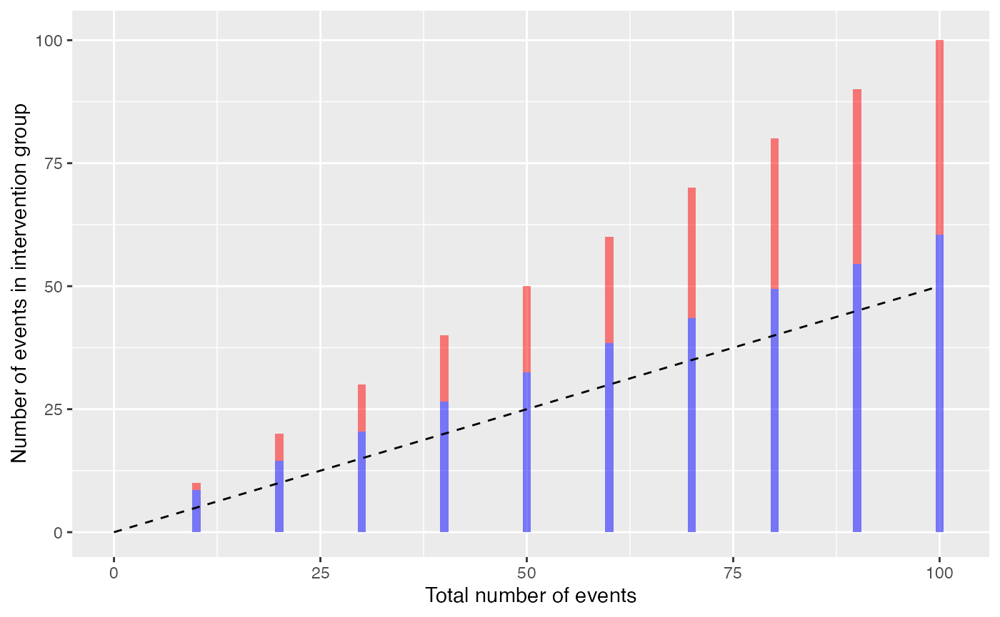
Where the bars indicate the time points of the interim analysis with the rejection region in red, and the dashed line represents the expectation (can be removed with ‘H0line = FALSE’)
Continuous monitoring could also be implemented:
hb<-getHarmBound(nevents = 0:100, alpha_test = 0.025, pH0 = 0.5, maxevents = 150)
plot(hb) 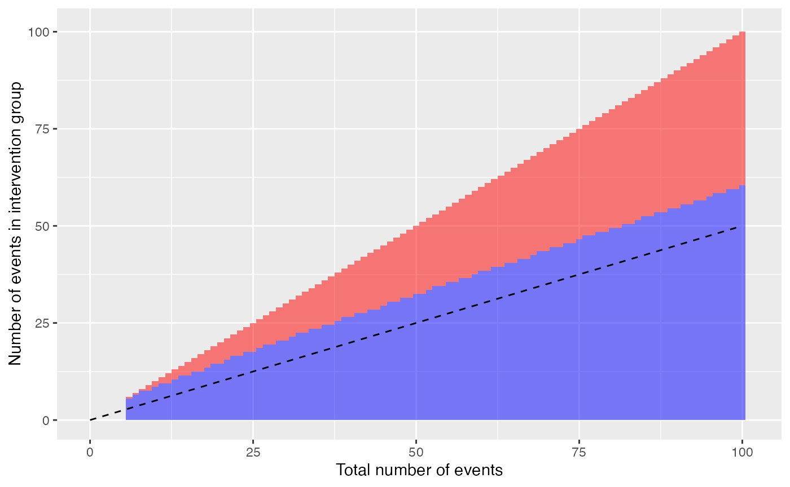
Observed data can be added as vector with 0 and 1, indicated the sequence of the groups in which events occurred (0 being the control and 1 the intervention group).
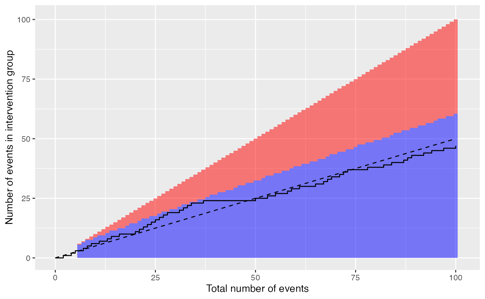
The boundary is not breached at any of the 10 interim analysis.Or with continuous monitoring:
hb<-getHarmBound(nevents = 0:100, alpha_test = 0.025, pH0 = 0.5, maxevents = 150)
set.seed(123)
eventgroups<-rbinom(n = 100, size = 1, prob = 0.5)
plot(hb, observed = eventgroups) 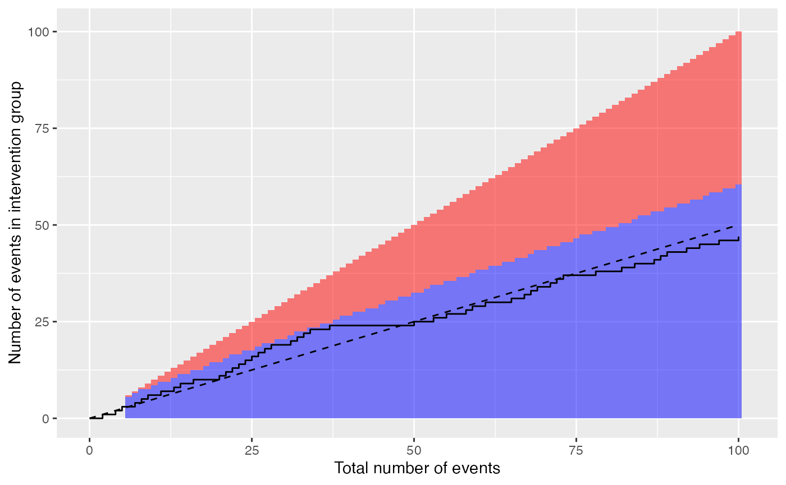
Operating characteristics
Stopping probabilities and expected number of events can be obtained for alternative scenarios with the getHarmBound function. The alternative hypothesis can be specified as
pH1: the proportion of the events in the intervention group, with 0.5 being the null scenario for a 1:1 rando, and numbers from 0.5 to 1 indicating a safety problem.
rrH1: the risk ratio (intervention / control), with 1 being the null scenario and numbers >1 indicating a safety problem.
rdH1: the risk difference (intervention minus control), with 0 being the null scenario and numbers >0 indicating a safety problem. Here the control proportion (r0) and the total number of participants (n) have to be specified.
orH1: the odds ratio (intervention / control), with 1 being the null scenario and number >1 indicating a safety problem. Here the control proportion (r0) has to be specified.
To stay in the event-based setting, we recommend using the first two options (pH1 or rrH1).
#with proportion of events in the intervention group:
hb<-getHarmBound(nevents = seq(10, 100, by = 10), alpha_test = 0.025, pH0 = 0.5, pH1 = 0.6, maxevents = 150)
hb
#> $bounds
#> events events_intervention events_control alpha_test
#> 1 10 9 1 0.025
#> 2 20 15 5 0.025
#> 3 30 21 9 0.025
#> 4 40 27 13 0.025
#> 5 50 33 17 0.025
#> 6 60 39 21 0.025
#> 7 70 44 26 0.025
#> 8 80 50 30 0.025
#> 9 90 55 35 0.025
#> 10 100 61 39 0.025
#>
#> $stopprob
#> $stopprob$`0.5`
#> events pH hyp stop_prob cum_stop_prob
#> 1 10 0.5 H0 0.010742188 0.01074219
#> 2 20 0.5 H0 0.016405106 0.02714729
#> 3 30 0.5 H0 0.011266726 0.03841402
#> 4 40 0.5 H0 0.007307253 0.04572127
#> 5 50 0.5 H0 0.004798221 0.05051949
#> 6 60 0.5 H0 0.003217823 0.05373732
#> 7 70 0.5 H0 0.006730864 0.06046818
#> 8 80 0.5 H0 0.003002399 0.06347058
#> 9 90 0.5 H0 0.005713749 0.06918433
#> 10 100 0.5 H0 0.002449994 0.07163432
#>
#> $stopprob$`0.6`
#> events pH hyp stop_prob cum_stop_prob
#> 1 10 0.6 H1 0.04635740 0.0463574
#> 2 20 0.6 H1 0.09503665 0.1413940
#> 3 30 0.6 H1 0.08037764 0.2217717
#> 4 40 0.6 H1 0.06377080 0.2855425
#> 5 50 0.6 H1 0.05117939 0.3367219
#> 6 60 0.6 H1 0.04194665 0.3786685
#> 7 70 0.6 H1 0.07679694 0.4554655
#> 8 80 0.6 H1 0.03922701 0.4946925
#> 9 90 0.6 H1 0.06524712 0.5599396
#> 10 100 0.6 H1 0.03194760 0.5918872
#>
#>
#> $opchar
#> p cum_stop_prob expected_events hyp
#> 1 0.5 0.07163432 142.2242 H0
#> 2 0.6 0.59188721 91.2001 H1
#>
#> attr(,"class")
#> [1] "harmbound" "list"Note that stopprob is now of length two with a data frame for each condition.
We would stop in 7.2% of the trials under the null (no safety problem) and in 59.2% under the alternative (safety problem with 60% of the events in the intervention group). Because of the higher probability of early stopping, the expected number of events is reduced from 142 under H0 to 91 under H1.
The (cumulative) stopping probabilities at each step can be plotted using absstopPlot or cumstopPlot (or the harmbound.plot-methods). We now using more than one alternative to make it more interesting:
hb<-getHarmBound(nevents = seq(10, 100, by = 10), alpha_test = 0.025,
pH0 = 0.5, pH1 = c(0.6, 0.7, 0.8) , maxevents = 150)
plot(hb, which = "abs_stopping")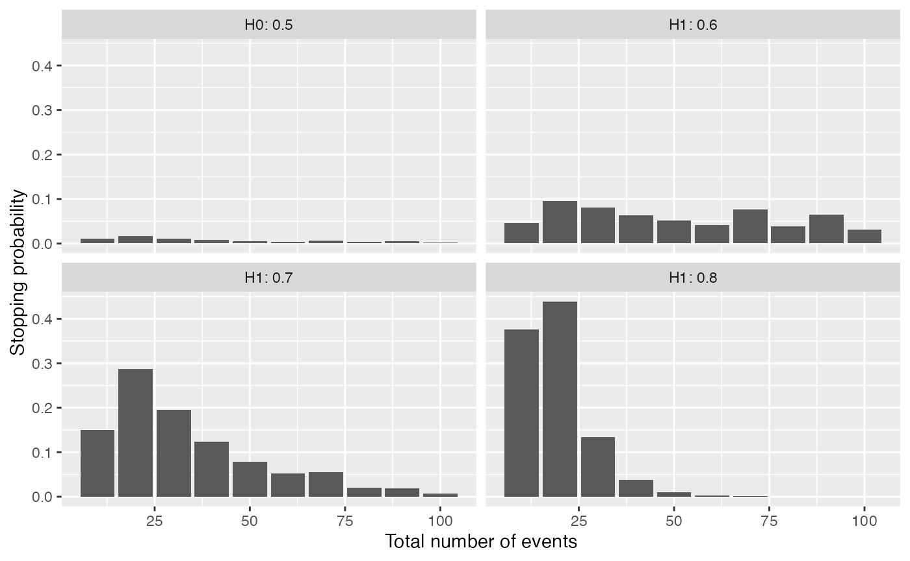
plot(hb, which = "cum_stopping")We can also specify a vector of alternatives and plot the cumulative stopping probabilities or the expected number of events for each alternative.
hb<-getHarmBound(nevents = seq(10, 100, by = 10), alpha_test = 0.025, pH0 = 0.5,
pH1 = seq(0,1,l=100), maxevents = 150)
plot(hb, which = "opchar_stop")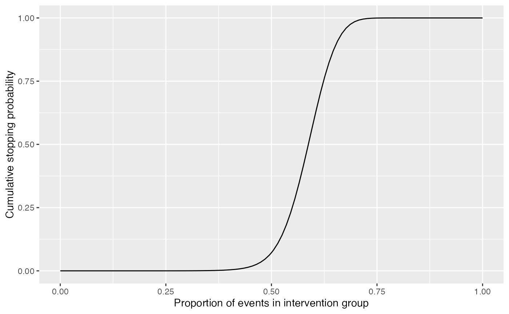
plot(hb, which = "opchar_n")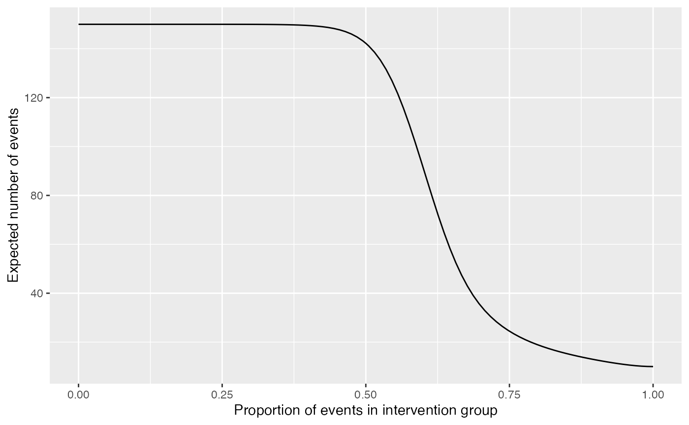
Choosing the test-wise alpha
To choose the test-wise alpha, we recommend to control the power rather than the Type I error. I.e. to check that a sufficient proportion of trials are stopped under an appropriate alternative hypothesis (reflecting a safety problem).
To do that we would check the stopping probabilities for a grid of alphas:
alphaPerTest <- getAlphaPerTest(nevents = seq(10, 100, by = 10), pH0 = 0.5,
totalAlpha = 0.05)
alist<-c(0.001,0.01,alphaPerTest,0.025,0.05)
hbl<-lapply(alist,function(x)
getHarmBound(nevents = seq(10, 100, by = 10), alpha_test = x,
pH0 = 0.5, pH1 = seq(0,1,l=100), maxevents = 150)$opchar)
hbd<-data.frame(do.call(rbind,hbl),alpha=rep(alist,each=nrow(hbl[[1]])))
hbd$alpha<-as.factor(round(hbd$alpha,4))
ggplot(hbd, aes(x = p, y = cum_stop_prob, colour=alpha)) +
geom_line() +
ylab("Stopping probability") +
xlab("Proportion of events in intervention group") +
scale_x_continuous(breaks=seq(0,1,by=0.1),limits=c(0.2,0.8)) +
scale_y_continuous(breaks=seq(0,1,by=0.2))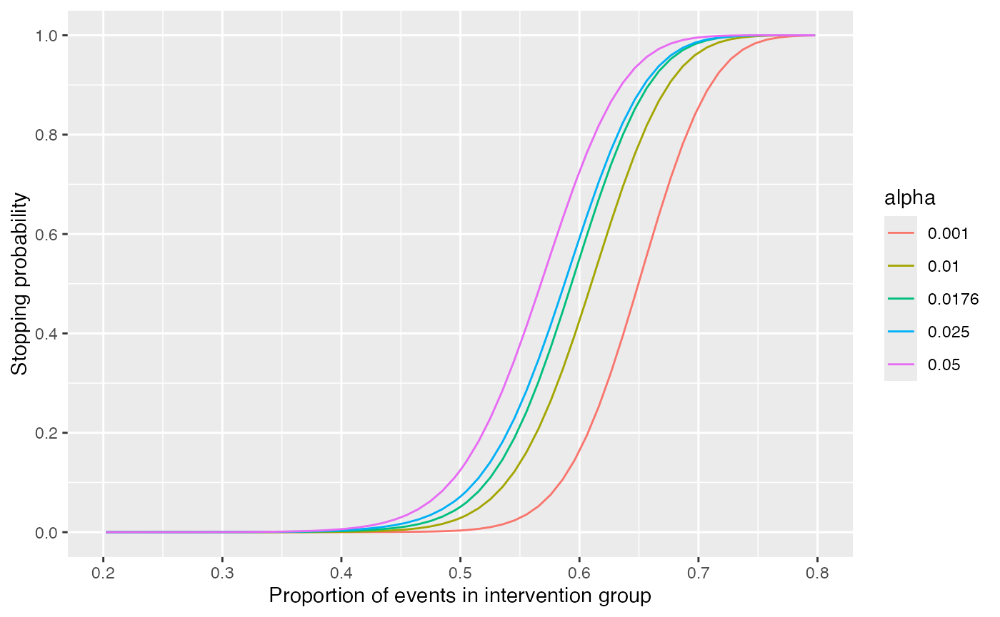
ggplot(hbd, aes(x = p, y = expected_events, colour=alpha)) +
geom_line() +
ylab("Expected number of events") +
xlab("Proportion of events in intervention group") +
scale_x_continuous(breaks=seq(0,1,by=0.1),limits=c(0.2,0.8)) +
scale_y_continuous(limits=c(0, 150))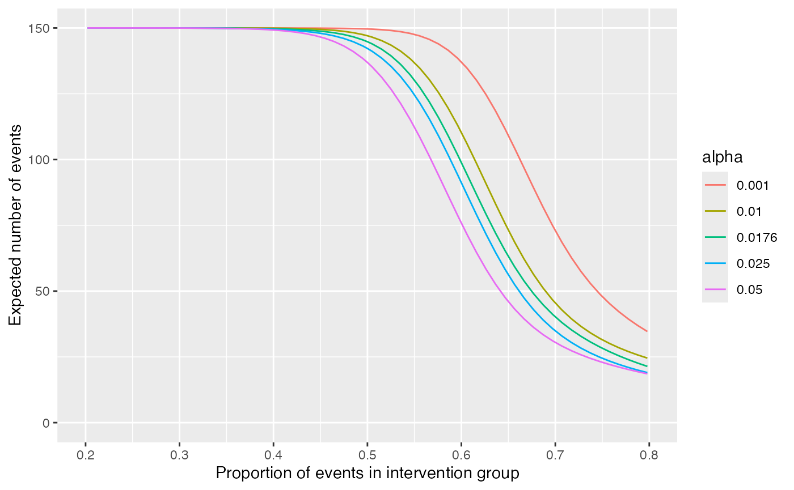
or on the transformed risk ratio scale:
alphaPerTest <- getAlphaPerTest(nevents = seq(10, 100, by = 10), pH0 = 0.5,
totalAlpha = 0.05)
alist<-c(0.001,0.01,alphaPerTest,0.025,0.05)
hbl<-lapply(alist,function(x)
getHarmBound(nevents = seq(10, 100, by = 10), alpha_test = x, pH0 = 0.5,
rrH1 = seq(0,10,l=100), maxevents = 150)$opchar)
hbd<-data.frame(do.call(rbind,hbl),alpha=rep(alist,each=nrow(hbl[[1]])))
hbd$alpha<-as.factor(round(hbd$alpha,4))
hbd$lrr<-log(hbd$rr)
ggplot(hbd, aes(x = rr, y = cum_stop_prob, colour=alpha)) +
geom_line() +
ylab("Stopping probability") +
xlab("Risk ratio (intervention/control)") +
scale_x_continuous(trans='log', breaks=c(0.5,0.75,1,1.5,2,3,4),
minor_breaks=NULL,limits=c(0.5,5)) +
scale_y_continuous(breaks=seq(0,1,by=0.2))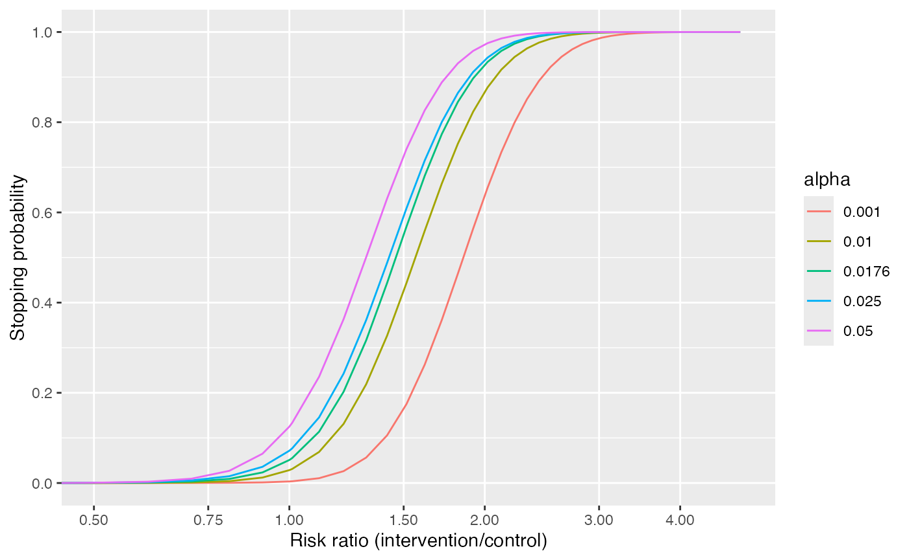
The step-wise alpha that leads to a reasonable stopping probability under an appropriate alternative can be selected. However, the steepness of the curve is not influenced by the alpha. We can only choose between making more Type I or II errors but not reduce the overall error rate.
We could e.g. specify that at least 70% of the trials should be stopped if the risk of having a safety event increase by half (i.e. a risk ratio of 1.5), i.e. a test-wise alpha of close to 0.05. However, this would also lead to a stopping of 12.5% of the trials under the null.
On the other hand, if we control the Type I error at 5% using a test-wise alpha of 0.0176, only 55% of the trials are stopped if there is a safety problem with a risk ratio of 1.5.
Further paramaters
The number of interim analyses has some impact on steepness and location of the curve, but it is rather limited, as long as the last interim analysis is at the same time point.
nelist<-list(c(100),c(50,100),c(10,20,50,100),
seq(10, 100, by = 10),seq(10, 100, by = 1))
hbl<-lapply(nelist,function(x)
getHarmBound(nevents = x, alpha_test = 0.025, pH0 = 0.5,
pH1 = seq(0,1,l=100), maxevents = 150)$opchar)
nis<-unlist(lapply(nelist,length))
net<-unlist(lapply(nelist,function(x) paste(x,collapse = "/")))
net[[length(net)-1]]<-"every 10"
net[[length(net)]]<-"continous"
nism<-paste0(nis," (",net,")")
hbd<-data.frame(do.call(rbind,hbl),ni=rep(nism,each=nrow(hbl[[1]])))
hbd$ni<-factor(hbd$ni,levels=nism)
ggplot(hbd, aes(x = p, y = cum_stop_prob, colour=ni)) +
geom_line() +
ylab("Stopping probability") +
xlab("Proportion of events in intervention group") +
scale_x_continuous(breaks=seq(0,1,by=0.1),limits=c(0.2,0.8)) +
scale_y_continuous(breaks=seq(0,1,by=0.2)) +
labs(colour="Number of IAs")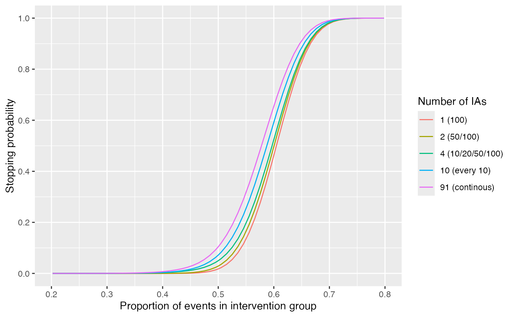
To substantially decrease the total error rates (i.e. get steeper curves), we would need a higher total number of events:
nelist<-list(seq(10, 20, by = 10),seq(10, 50, by = 10), seq(10, 100, by = 10), seq(10, 200, by = 10))
hbl<-lapply(nelist,function(x)
getHarmBound(nevents = x, alpha_test = 0.025, pH0 = 0.5,
pH1 = seq(0,1,l=100))$opchar)
nis<-unlist(lapply(nelist,max))
hbd<-data.frame(do.call(rbind,hbl),ni=rep(nis,each=nrow(hbl[[1]])))
hbd$ni<-as.factor(hbd$ni)
ggplot(hbd, aes(x = p, y = cum_stop_prob, colour=ni)) +
geom_line() +
ylab("Stopping probability") +
xlab("Proportion of events in intervention group") +
scale_x_continuous(breaks=seq(0,1,by=0.1),limits=c(0.2,0.8)) +
scale_y_continuous(breaks=seq(0,1,by=0.2)) +
labs(colour="Total number of events")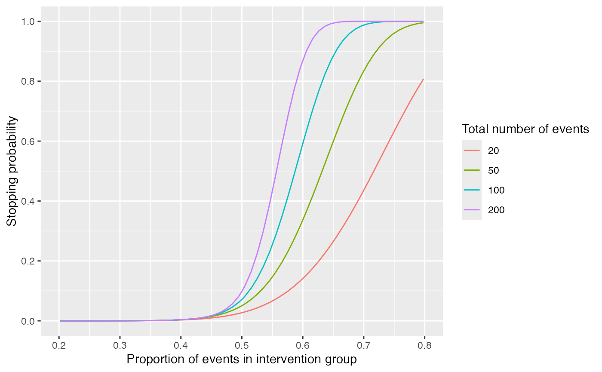